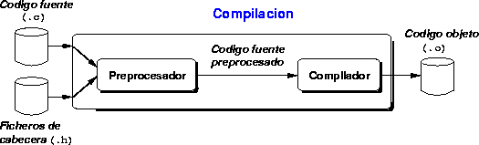
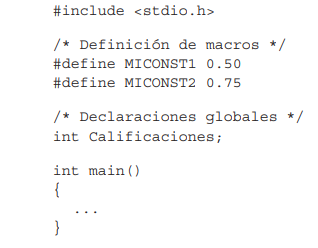

Indice
1. Introduccion
C es un lenguaje de programación de propósito general que ofrece economía sintáctica, control de flujo, estructuras sencillas y un buen conjunto de operadores. Es un lenguaje de nivel medio y no está especializado en ningún tipo de aplicación. Esto lo hace un lenguaje versátil y potente, con un campo de aplicación ilimitado y, sobre todo, se puede aprender rápidamente. En poco tiempo, un programador puede utilizar la totalidad del lenguaje. El lenguaje C es un lenguaje compilado. Existen dos tipos de lenguaje: interpretados y compilados. Los interpretados son aquellos que necesitan del código fuente para funcionar (por ejemplo, Basic). Los compilados, convierten el código fuente en un fichero objeto y éste en un fichero ejecutable. Este es el caso del lenguaje C.
Los programas C se escriben con la ayuda de un editor de textos del mismo modo que cualquier texto corriente. Estos ficheros se conocen como ficheros fuente. El programa compilador toma como entrada el código fuente del programa, y da como salida un fichero que puede ser ejecutado por el ordenador directamente. Una vez compilado, el programa ejecutable es autónomo, y ya no es necesario disponer del programa original ni del compilador para ejecutarlo.
2. Estructura general de un programa en C
Una función en C es un grupo de instrucciones que realizan una o más acciones. Asimismo, un programa contendrá una serie de directivas #include que permitirán incluir en el mismo archivos de cabecera que a su vez constarán de funciones y datos predefinidos.

2.1 Directivas del preprocesador
El preprocesador en un programa C se puede considerar como un editor de texto inteligente que consta de directivas (instrucciones al compilador antes de que se compile el programa principal). Las dos directivas más usuales son #include y #define.
Todas las directivas del preprocesador comienzan con la almoahdilla (#)que le indica al mismo que lea dichas directivas antes de compilar. La directiva include indica al compilador que lea el archivo y lo inserte. Estos archivos
denominados como archivos de cabecera tienen como extension .h como por ejemplo stdio.h y stdlib.h
La directiva #define indica al preprocesador que defina un ítem de datos u operación para el programa C. Por ejemplo, la directiva
#define TAM_LINEA 65
sustituirá TAM_LINEA por el valor 65 cada vez que aparezca en el programa
2.2 Declaraciones globales
Las declaraciones globales indican al compilador las funciones definidas por el usuario o las variables declaradas que serán comunes a todo el programa. Se situán justo antes de la función main() Las declaraciones de funciones se denominan prototipo.
2.3 Funcion main()
Cada programa en C debe tener una función main() que es el punto de entrada al programa.
int main()
{
... bloque de sentencias
}
En un programa corto, el programa completo puede incluirse totalmente en la función main(). En programa largo, será necesario hacer llamadas a funciones propias definidas por el usuarioprácticamente de llamadas a las funciones definidas por el usuario.
int main()
{
obtenerSaldo();
ingresar(100);
}
2.4 Funciones definidas por el usuario
Un programa en C estará compuesto por una colección de funciones. Las funciones, tienen a su vez varias sentencias que completan una tarea concreta. Las funciones definidas por el usuario se invocan por
su nombre y se le pasan los parametros opciones que pueda tener. Entonces se ejecuta el código y se devuelve a la función que la invocó.
La declaración de la función indica al compilador el nombre por el cual será invocado y los posibles parámetros pasables a la función
tipo_retorno nombre_función(lista_de_parámetros) principio de la función
{
sentencias cuerpo de la función
return; retorno de la función
} fin de la función
tipo_retorno tipo de valor, o void, devuelto por la función
lista_de_parámetros lista de parámetros, o void, pasados a la función.
Por ejemplo con la función ingresar con la que añadimos un importe a nuestra cuenta corriente
void ingresar(int *saldoCuenta, int ingreso)
{
*saldoCuenta += ingreso;
}
2.5 Comentarios
Un comentario es información para documentar un archivo, de forma que no sea ignorado por el compilador y que sirva para el usuario que lee el fichero. Se considera buena práctica comentar su código fuente para que sea facil de leer sobre todo con el paso del tiempo. Los comentarios empiezan con la secuencia de caracteres /* y terminan con */ como veremos en los siguientes ejemplos.
/* Esto
es
un comentario
multilinea
*/
/*Tambien puede usarse para comentarios en una sola linea*/
printf("El saldo actual es %d\n" obtenerSaldo(cuenta)); /* También puedo ir en la misma linea que el código */
Por último, se permite el uso de comentarios de una sola linea con la secuencia //.
//Esto también es un comentario válido
3. Tipos de datos
C nos ofrece tres tipos de datos básicos, aunque nos permite crear nuestros propios tipos de datos. Estos tipos básicos son:
- enteros
- numeros reales o de coma flotante
- caracteres
3.1 Enteros
El tipo de dato más familiar es el tipo entero y se define con la palabra int. Los modificadores unsigned, short y long nos permiten variar el rango de los enteros.
3.2 Float
Los tipos de datos de coma flotante representan numeros reales que contienen una coma (punto). Se declaran con la palabra float o double ( mayor rango de valores)
3.3 Caracteres
Un cáracter es cualquier elemento de un alfabeto. La mayoría de computadores utilizan el conjunto de caracteres ASCII. C procesa datos carácter utilizando el tipo de dato char.
char caracter = 'A';
Internamente, los carácteres se almacenan como números que corresponden al código ASCII (0-255). Como se verá más adelante, podremos crear arrays (tablas) de carácteres, formando cadenas.
3.4 Tipo Lógico
El tipo bool, nos permite asignar a una variable solo dos posibles valores: true o false. Es muy útil para las estrcuturas de control ( if,while...). Se basa en el tipo int, interpretando como verdadero todo valor distinto de 0 , y como falso el valor 0.
3.5 Constantes
Las constantes simbólicas asginan valores mediante la directiva #define como por ejemplo #define PI 3.1415. El compilador, cada vez que encuentra ocurrencias con la palabra PI, la sustituye por el valor 3.1415
3.6 Variables
En C, una variable es una posición con nombre en memoria donde se le almacena un valor de un cierto tipo. Estas pueden almacenar cualquier tipo de dato y a diferencia de las constantes, si que pueden ser modificadas a lo largo de la ejecución del código. El procedimiento para definir (crear) una variable es escribir el tipo de dato, el nombre de la varibale y el valor que se le asigna (opcional)
int x;
char letra;
3.6.1 Declaración
Una declaración de una variable es una sentencia que proporciona información de la varibale al compilador de C.
tipo variable
tipo es el nombre de un tipo
variable es el identificador (nombre)
Ejemplo
long dNumero;
float HorasPorSemana;
float NotaMedia;
short DiaSemana;
Es necesario declarar las variables antes de utilizarlas En C, el ámbito de las variables es el bloque en el que están declaradas.
3.6.2 Inicialización
La inicialización se produce cuando se le asigna un valor a una variable. Esto se puede realizar cuando se declaran, o despues de la declaración.
Declaración con valor inicial
char respuesta = 'S';
int contador = 1;
Declaración e inicialización por separado
char letra;
letra = 'X';
Declaración vs definición
La diferencia entre estos terminos es bastante pequeña y en ocasiones lleva a confusión. Una declaración introduce una variable con un nombre y un tipo asociado, de forma que el programa la pueda reconocer. En cambio, una definición es una declaración que asigna al mismo tiempo memoria a la variable
3.7 Duracion de una variable
Las variables, por lo general, tienen la duración asociada al bloque en el que están definidas. Existe una alternativa para evitar este comportamiento y son las variables estáticas. Estas se definen con la especificación static. Las variables estáticas se crean al principio del programa y no se destruyen hasta que el programa finaliza.
4. Estructuras de Control
Las estructuras de control nos permiten modificar el flujo de ejecución de las instrucciones de un programa. Estas
deben tener un solo punto de entrada y salida. Las podemos clasificar como estructuras de control de selección o iterativas.
Las de selección ejecutan un bloque de instrucciones u otro, en función de si se cumple o no una condición. Dentro de este grupo se encuentran las sentencias if y switch.
Las estructuras de control iterativas, inician o repiten un bloque de instrucciones mientras se siga cumpliendo la condición. De este tipo tenemos las sentencias While, For y Do While
4.1 If
La sentencia if permite redirigir el programa evaluando una concición simple, sea verdadera o falsa. Si la condición es verdadera, se ejecuta el primer bloque de código, y en caso contrario se ejecuta el segundo. La estructura general de la sentencia if es la siguiente:
if (condición)
{
código en caso de true
}
else
{
código en caso de false
}
El bloque else es opcional, pudiendo no ejecutar nada en caso de que no se cumpla la condición. Podemos también tener múltiples sentencias if anidadas. La estructura sería algo parecido a lo siguiente:
if (condición)
{
código en caso de true
}
if (2a condición)
{
código en caso de true 2a condición
}
}
else
{
código en caso de false
}
4.2 Switch
Esta sentencia permite ejecutar un bloque de código de entre varias posibilidades en función del valor de la expresión. Para ello se evalúa el valor de la expresión y se recorren los casos hasta que la primera coincidencia. Tras la primera coincidencia, se ejecuta el bloque de código correspondiente, y se sale de la instrucción switch. Si no se encuentra ninguna coincidencia se ejecuta el código especificado en la etiqueta default. La estructura general es la siguiente:
switch (expresión){
case expresión1:
código1;
break;
case expresión2:
código2;
break;
case expresión3:
código3;
break;
default:
código default;
break;
Podemos ver un ejemplo concreto con los días del mes asignados a una variable entera diasMes y una variable mes introducida por linea de comandos
switch (mes)
{
case 2:
diasMes = 28;
break;
case 4:
case 6:
case 9:
case 11:
diasMes = 30;
break;
default:
diasMes = 31;
break;
}
Se puede aplicar un mismo bloque de código a múltiples casos de la forma especificada en el ejemplo. El caso default se utiliza para detectar casos no válidos o erróneos, ó como en el caso anterior para disminuir el número de lineas de código.
4.3 While
A veces es necesario ejecutar el mismo bloque de código varias veces. Para eso usamos las sentencias While,Do While y For. El bucle while tiene una estrcutura muy sencilla en la que mientras se cumpla la condición se ejecuta el código una y otra vez. Por tanto, es muy importante que en el bloque de código se modifique el valor asociado a la condición para no caer en un bucle infinito.
while (condición)
{
bloque de código;
}
4.4 Do While
Si la condición del while no se cumple, podría no llegar a ejecutarse nunca. La sentencia Do While se diferencia del While, en que se ejecuta siempre como mínimo una vez. Se ejecuta el bloque de código, y se comprueba la condición posteriormente.
do
{
bloque de código;
}
while ( expresión );
4.5 For
La sintaxis del bucle for es:
for ( inicialización; expresión; incremento)
{
bloque
}
El bucle for se puede considerar como una variación del bucle while en el que sabemos el número de iteraciones que hay que realizar. Es bastante flexible ya que pueden omitirse cualquiera de los tres campos. La primera expresión suele ser la inicialización de las variables. La segunda expresión es la que contiene una expresión booleana, que determinará el fin del bucle. La tercera expresión, contiene las instrucciones a ejecutar al finalizar cada iteración del bucle y que harán que este acabe terminando ( la expresión 2 dejará de ser cierta en algún momento o estaremos en un bucle infinito)
5. Punteros
Los punteros son uno de los aspectos más potentes e importantes del lenguaje C, pero también de los más complejos. Antes de explicar en que consisten hay que hablar sobre la memoria del ordenador.
Cada vez que declaramos una variable, ésta estará ocupando cierto espacio en la memoria de nuestro ordenador. Para conocer el valor de dicha variable almacenada en memoria, nuestro ordenador necesitará tres datos: como está codificada la variable, que tamaño tiene y en que zona de memoria está guardada. Según el tipo tendremos un tamaño distinto ( 4 octetos para int y 8 octetos para float por ejemplo. Ver función sizeof())
Un puntero nos apunta a una variable, en concreto a la dirección de memoria que ésta ocupa. Además tendrá un tipo asociado que será el de la variable a la que apunta. Para declarar un puntero se usa el caracter '*'. Por ejemplo
int * punteroEntero = NULL;
float * punteroFloat = NULL;
Ambas variables almacenarán la dirección de una varibale de tipo entero y float respectivamente. Asignarles el valor NULL en la inicialización es bastante importante, ya que incialmente tendrá un valor desconocido y podríamos estar accediendo a zonas de memoria que no deseamos provocando errores dificiles de detectar.
5.1 Operadores de punteros
Para los punteros usamos dos tipos de operadores, '&' y '*'
- &: operador de dirección. Se aplica como prefijo a cualquier variable y nos devuelve la dirección en la que se encuenta
- *: operador de contenido. Se aplica como prefijo a un puntero para obtener el valor contenido en la dirección de memoria
int cinco = 5;
int *pCinco = &cinco;
printf("La varibale cinco vale %d y se encuentra en la direccion de memoria %p\n", *pCinco, pCinco);
Alternativamente se podría haber usado cinco en vez de *pCinco y &cinco en vez de pCinco ya que tienen el mismo efecto
5.2 Uso de punteros en funciones
Una de las limitaciones que tenemos en C, es que al ser las variables locales ( por lo general ), cuando hacemos una modificación en una variable dentro de una función, ésta sólo se verá modificada en el ámbito de la función, y al volver de ella volverá al valor que tenía anteriormente.
{
int saldoBanco = 200;
int aumento = 500;
aumentarSaldo(saldoBanco, aumento);
printf("El saldo acutal es: %d\n", saldoBanco); // Vale 200 de nuevo
}
void aumentarSaldo(int saldo, int aumento)
{
saldo += aumento;
printf("El saldo al aumentar es: %d\n", saldoBanco); // Vale 700
}
Esta situación se resuelve facilmente con punteros. Vamos a ver como sería el ejemplo modificado
int main()
{
int saldoBanco = 200;
int aumento = 500;
aumentarSaldo(&saldoBanco, aumento);
return 0;
}
void aumentarSaldo(int * saldo, int importe)
{
*saldo += importe;
}
En este caso, el resultado si es el esperado, puesto que se le ha pasado a la función la dirección de memoria donde queremos hacer modificaciones. Cuando hacemos modificaciones con el operador '*'
estamos haciendo los cambios sobre el contenido que hay en la dirección de memoria especificada. Al retornar la función, se elimina lo que se elimina es la copia al puntero, que se le pasó como parámetro, pero el contenido si que ha sido cambiado.
Para más información sobre punteros o C , puedes consultar la documentación en el apartado de herramientas externas